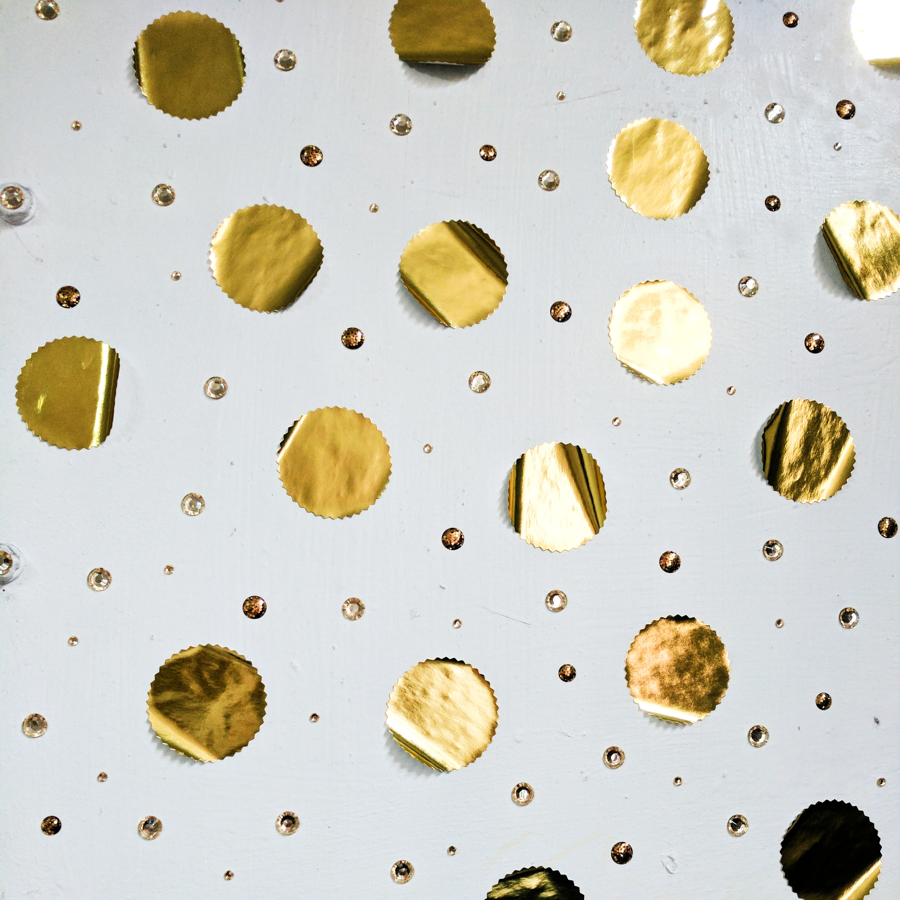

jack of the suburbs

Athleisure
new single out 24.10.26
listen + buy |
|---|
|
Subvert
play + buy →
buy · stream · co-op owned |
|
Bandcamp
play + buy →
buy · stream · download |
|
SoundCloud
play →
stream |
about the release |
|---|
Athleisure captures the magical feeling that takes over when you are in your active wear. A choppy vocal bounces across a looped synth line that starts to stray off course from over excitement of the thought of polyester and elastane blends supporting a day's activities of running, pilates, and the big shop at Waitrose.
|
jack of the suburbs makes computer music from irl + url sounds.